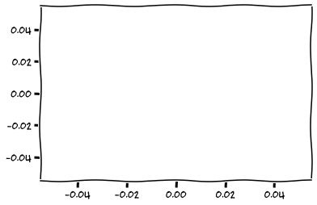
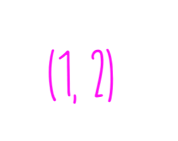
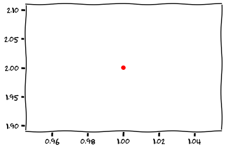
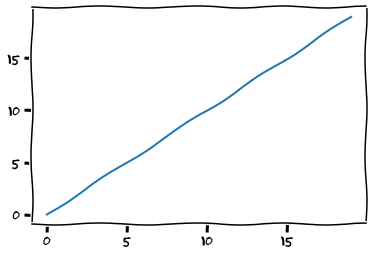
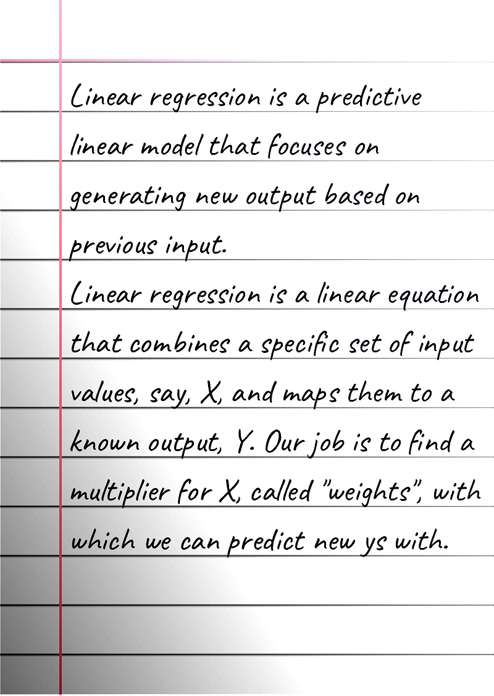

Understanding and Implementing AI Algorithms
By Chubak Bidpaa
You're currently browsing an HTML page created by Markdown. What is a codex? Before printing press was invented, scholars, scientists, monks, physicians all across the globe recorded their writings and theses inside hand-written booklets which they held together with paste.
This is a digital version of that. It's not as serious as a real book, but it's also much more nuanced and expansive than a Medium article.
I started writing this after my dear Friend Felix told me I need to be able to muster up a TLU even if I'm locked inside a room with no access to internet or books. One needs to understand machine learning from the heart. That is why I decided to write this codex. To teach myself, this is my "learning log". I don't intend to teach, but if you learn anything from this, two birds one stone I guess.
This codex is full of mathematical formulas and Python/Go/Rust codes. If you notice an error, contact me on Chubak#7400.
My intention is to use books to implement ML algorithms. Some of the algorithms are in Rust, some are in Python, some are in Go; and some are in all three.
Let's hope we're going to have some fun.
Regression was probably used by some Arab or Persian mathematician before the Mongols roughed up that entire part of the world, and Gauss probably was not the first to use it because according to him, it was so obvious that someone definitely must have done it before!
This trivial discovery of rediscovery is now the basis for Machine Learning. Classification is not much different than Regression, you just "activate" the results like you activate coal so sixteen year old girls who've just downed a handful of Ambiens can throw up. All the shallow and deep models rely on Gauss' invention. Deep Learning is centered around the concept of "Threshold Linear Units". A deep model is just a connected network of TLUs and TLUs, in turn, are not much different than what linear regression is based on:
But what is this? Imagine you're in middle school. Miss Paget draws this on the board:

"Children," she murmurs, tiredly, as she moonlights as a gas station attendant 4 nights a week "This is a coordinate system. The horizontal line, we call the X axis. The vertical line, we call the Y axis."
Miss Paget drinks a sip of her booze, unceremoniously camouflaged inside a coffee cup.
"Imagine we have two numbers. Like, 1 and 2. We put these two numbers inside a paranthesis, like so."
And she draws this on the board.

"The first number is a point on the X axis. The second number is a point on the Y axis."
"So if we plot the two points on our system, we get this."

Miss Paget continues "Now imagine, we have millions of these points. We know the relationship between these points. We know that y equals x, or y equals x multiplied by two, or we know that x is y divided by four. Or we know that y is x squared, or is root of x."
"But for now, just imagine that y equals x. We write it as..."
"This is called an equation. All equations can be plotted on the coordinate system."
Her hands reached the black marker, and she drew the following on the board.

"This is the y = x plot... Jimbo Junior, stop chewing gum."
Jimbo Junior swallowed his gum. This gum stayed in his system until six years later, when he took his first stats class.
Pajeet Jamat, the Indian stats professor at poor man's MIT, Georgia Tech, wrote the equation for linear regression on the board. Jimbo looked at the scribblings notebook:

It suddenly dawned on him, man! Linear regression is just a simple line... He imagined, we have;
Now just replace x with a matrix of features, with a size of --- and b with weights of size --- now ys are the targets --- with a size of .
Jimbo raised his hand "Professor Pajeet, haven't you forgotten something?"
Suddenly the earth shook and tore. A large beast appeared from the casm.
"He forgot me, the bias!"
With smog, he wrote this on the air:
The monster continued "I AM THE WEIGHT BIAS. YOU'LL HEAR ABOUT ME LATER. IF I LET YOU LIVE. BUT I DON'T WANT TO".
And the bias monster killed everyone in the room.
And, thusly, Linear regression is basically it. We predict values with it, and to do that, we first need o find the corresponding weight to each feaure --- a weight that works best to predict a value with the least amount of error.
But how do we calculate this so-called error? There are several loss functions that can do that.
These are:
| Name | Function | Corresponding Regression |
|---|---|---|
| Mean Squared Error | Least-Squares |